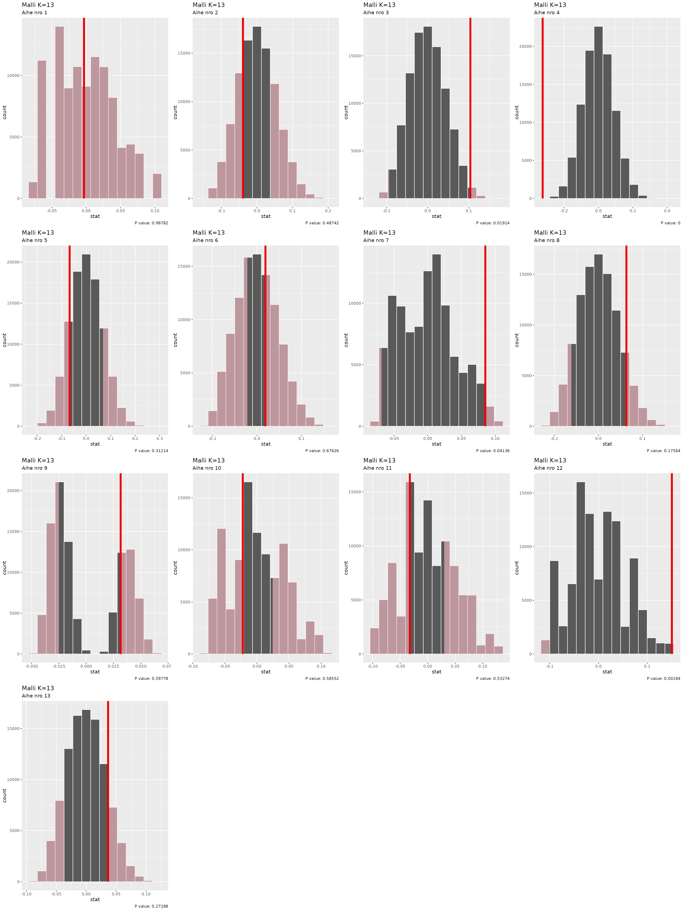

library(rfintext)
# devtools::install_github("StranMax/rfinstats")
library(rfinstats)
library(tidymodels)
library(topicmodels)
library(cowplot)
library(dplyr)
library(tidytext)
library(ggplot2)
library(quanteda)
library(forcats)
library(purrr)
library(future) # Parallel processing back-end
library(furrr) # Parallel processing front-end with future_ functions
plan(multisession, workers = availableCores(logical = FALSE) - 1)
dtm <- aspol |>
preprocess_corpus(kunta) |>
corpus_to_dtm(kunta, LEMMA)
y <- rfinstats::taantuvat |>
filter(kunta %in% unique(aspol$kunta)) |>
mutate(luokka = if_else(suht_muutos_2010_2022 > 0, "kasvava", "taantuva"))
y
#> # A tibble: 66 × 5
#> kunta vaesto kokmuutos_2010_2022 suht_muutos_2010_2022 luokka
#> <chr> <int> <int> <dbl> <chr>
#> 1 Enontekiö 1876 -71 -3.78 taantuva
#> 2 Espoo 247970 60944 24.6 kasvava
#> 3 Eura 12507 -1278 -10.2 taantuva
#> 4 Hartola 3355 -814 -24.3 taantuva
#> 5 Hattula 9657 -266 -2.75 taantuva
#> 6 Helsinki 588549 80678 13.7 kasvava
#> 7 Huittinen 10663 -955 -8.96 taantuva
#> 8 Hyvinkää 45489 1527 3.36 kasvava
#> 9 Hämeenlinna 66829 1588 2.38 kasvava
#> 10 Iitti 7005 -557 -7.95 taantuva
#> # ℹ 56 more rows
# optimal_k <- c(5, 15, 18, 21)
# optimal_k <- c(5, 8, 11, 14, 19)
optimal_k <- c(5, 7, 10, 15, 21) # Visually selected based on mean topic coherence (see article 3)
ptm <- proc.time()
lda_models <- tibble(K = optimal_k) |>
mutate(
# LDA model
topic_model = future_map(
K, ~LDA(convert(dtm, to = "tm"), k = ., control = list(seed = 1234)),
.options = furrr_options(seed = NULL)
),
# Beta matrix
beta = map(
topic_model, \(x) tidy(x, matrix = "beta")
),
# Theta matrix (gamma)
theta = map(
topic_model, \(x) {
tidy(x, matrix = "gamma") |>
filter(document %in% y$kunta) |>
rename(kunta = document, theta = gamma)
}
)
)
proc.time() - ptm
#> user system elapsed
#> 2.644 0.106 80.430
lda_models
#> # A tibble: 5 × 4
#> K topic_model beta theta
#> <dbl> <list> <list> <list>
#> 1 5 <LDA_VEM> <tibble [15,190 × 3]> <tibble [330 × 3]>
#> 2 7 <LDA_VEM> <tibble [21,266 × 3]> <tibble [462 × 3]>
#> 3 10 <LDA_VEM> <tibble [30,380 × 3]> <tibble [660 × 3]>
#> 4 15 <LDA_VEM> <tibble [45,570 × 3]> <tibble [990 × 3]>
#> 5 21 <LDA_VEM> <tibble [63,798 × 3]> <tibble [1,386 × 3]>
lda_models <- lda_models |>
mutate(theta = map(theta, \(df) {
df |>
left_join(y) |>
select(aihe = topic, theta, luokka) |>
mutate(luokka = factor(luokka))
}))
#> Joining with `by = join_by(kunta)`
#> Joining with `by = join_by(kunta)`
#> Joining with `by = join_by(kunta)`
#> Joining with `by = join_by(kunta)`
#> Joining with `by = join_by(kunta)`
lda_models
#> # A tibble: 5 × 4
#> K topic_model beta theta
#> <dbl> <list> <list> <list>
#> 1 5 <LDA_VEM> <tibble [15,190 × 3]> <tibble [330 × 3]>
#> 2 7 <LDA_VEM> <tibble [21,266 × 3]> <tibble [462 × 3]>
#> 3 10 <LDA_VEM> <tibble [30,380 × 3]> <tibble [660 × 3]>
#> 4 15 <LDA_VEM> <tibble [45,570 × 3]> <tibble [990 × 3]>
#> 5 21 <LDA_VEM> <tibble [63,798 × 3]> <tibble [1,386 × 3]>We calculate null distribution of t-values and observed t-value:
ptm <- proc.time()
t_distributions <- lda_models |>
select(K, theta) |>
unnest(theta) |>
nest(data = c(theta, luokka)) |>
mutate(
null_dist = future_map(data, \(df) {
# t-distribution under null hypothesis
df |>
specify(theta ~ luokka) |>
hypothesize(null = "independence") |>
generate(reps = 100000, type = "permute") |>
calculate("diff in means", order = c("kasvava", "taantuva"))
}, .options = furrr_options(seed = TRUE)),
# t-value for estimation
t_val = map_dbl(data, \(df) {
df |>
specify(theta ~ luokka) |>
calculate("diff in means", order = c("kasvava", "taantuva")) |>
pull(stat)
})
)
proc.time() - ptm
#> user system elapsed
#> 30.435 0.619 560.393
t_distributions
#> # A tibble: 58 × 5
#> K aihe data null_dist t_val
#> <dbl> <int> <list> <list> <dbl>
#> 1 5 1 <tibble [66 × 2]> <infer [100,000 × 2]> 0.0707
#> 2 5 2 <tibble [66 × 2]> <infer [100,000 × 2]> 0.250
#> 3 5 3 <tibble [66 × 2]> <infer [100,000 × 2]> -0.337
#> 4 5 4 <tibble [66 × 2]> <infer [100,000 × 2]> -0.00643
#> 5 5 5 <tibble [66 × 2]> <infer [100,000 × 2]> 0.0227
#> 6 7 1 <tibble [66 × 2]> <infer [100,000 × 2]> 0.134
#> 7 7 2 <tibble [66 × 2]> <infer [100,000 × 2]> 0.175
#> 8 7 3 <tibble [66 × 2]> <infer [100,000 × 2]> 0.00757
#> 9 7 4 <tibble [66 × 2]> <infer [100,000 × 2]> 0.0679
#> 10 7 5 <tibble [66 × 2]> <infer [100,000 × 2]> -0.0135
#> # ℹ 48 more rowsNext we calculate p-values:
t_distributions <- t_distributions |>
mutate(
p_value = pmap_dbl(select(t_distributions, null_dist, t_val), \(null_dist, t_val) {
null_dist |>
get_p_value(obs_stat = t_val, direction = "two-sided") |>
pull(p_value)
})
)
#> Warning: There were 4 warnings in `mutate()`.
#> The first warning was:
#> ℹ In argument: `p_value = pmap_dbl(...)`.
#> Caused by warning:
#> ! Please be cautious in reporting a p-value of 0. This result is an approximation
#> based on the number of `reps` chosen in the `generate()` step.
#> ℹ See `get_p_value()` (`?infer::get_p_value()`) for more information.
#> ℹ Run `dplyr::last_dplyr_warnings()` to see the 3 remaining warnings.
t_distributions
#> # A tibble: 58 × 6
#> K aihe data null_dist t_val p_value
#> <dbl> <int> <list> <list> <dbl> <dbl>
#> 1 5 1 <tibble [66 × 2]> <infer [100,000 × 2]> 0.0707 0.247
#> 2 5 2 <tibble [66 × 2]> <infer [100,000 × 2]> 0.250 0
#> 3 5 3 <tibble [66 × 2]> <infer [100,000 × 2]> -0.337 0.00006
#> 4 5 4 <tibble [66 × 2]> <infer [100,000 × 2]> -0.00643 0.921
#> 5 5 5 <tibble [66 × 2]> <infer [100,000 × 2]> 0.0227 0.764
#> 6 7 1 <tibble [66 × 2]> <infer [100,000 × 2]> 0.134 0.0286
#> 7 7 2 <tibble [66 × 2]> <infer [100,000 × 2]> 0.175 0.00018
#> 8 7 3 <tibble [66 × 2]> <infer [100,000 × 2]> 0.00757 0.874
#> 9 7 4 <tibble [66 × 2]> <infer [100,000 × 2]> 0.0679 0.219
#> 10 7 5 <tibble [66 × 2]> <infer [100,000 × 2]> -0.0135 0.870
#> # ℹ 48 more rows
plot_grid(plotlist = pmap(select(t_distributions, -data), \(K, aihe, null_dist, t_val, p_value) {
visualise(null_dist) +
shade_p_value(obs_stat = t_val, direction = "two_sided") +
labs(subtitle = paste0("Aihe nro ", aihe),
title = paste0("Malli K=", K),
caption = paste0("P value: ", p_value))
}),
ncol = 4
)
# for (i in unique(theta_matrix$model)) {
# print(
# theta_matrix |>
# filter(model == i) |>
# slice_max(gamma, by = document) |>
# arrange(topic) |>
# left_join(taantuvat, by = join_by("document" == "kunta")) |>
# mutate(topic = factor(topic)) |>
# ggplot(aes(x = topic, y = suht_muutos_2010_2022, colour = gamma)) +
# geom_point() +
# scale_colour_viridis_c(option = "A") +
# labs(title = "Most likely topic per document", subtitle = paste0("Model_", i))
# )
# }
# for (i in unique(theta_matrix$model)) {
# print(
# theta_matrix |>
# filter(model == i) |>
# left_join(taantuvat, by = join_by("document" == "kunta")) |>
# summarise(mean_gamma = mean(gamma), gamma_median = median(gamma), .by = c(luokka, topic)) |>
# mutate(topic = factor(topic)) |>
# ggplot() +
# geom_point(aes(x = topic, y = mean_gamma, colour = luokka), shape = 16) +
# geom_point(aes(x = topic, y = gamma_median, colour = luokka), shape = 17) +
# scale_colour_viridis_d(option = "A") +
# labs(title = "Most likely topic per class", subtitle = paste0("Model_", i))
# )
# }
# for (i in unique(theta_matrix$model)) {
# print(
# theta_matrix |>
# filter(model == i) |>
# left_join(taantuvat, by = join_by("document" == "kunta")) |>
# mutate(luokka = if_else(suht_muutos_2010_2022 > 0, "Kasvava", "Taantuva"),
# topic = factor(as.integer(topic))) |>
# summarise(gamma_sum = sum(gamma),
# gamma_mean = mean(gamma),
# gamma_median = median(gamma),
# .by = c(luokka, topic)) |>
# ggplot() +
# geom_tile(aes(x = topic, y = luokka, fill = gamma_mean)) +
# scale_fill_viridis_c(option = "A") +
# labs(title = "Common topics per class", subtitle = paste0("Model_", i))
# )
# }
# for (i in unique(theta_matrix$model)) {
# print(
# theta_matrix |>
# filter(model == i) |>
# left_join(taantuvat, by = join_by("document" == "kunta")) |>
# mutate(luokka = if_else(suht_muutos_2010_2022 > 0, "Kasvava", "Taantuva"),
# topic = factor(as.integer(topic))) |>
# summarise(gamma_sum = sum(gamma),
# gamma_mean = mean(gamma),
# gamma_median = median(gamma),
# .by = c(luokka, topic)) |>
# ggplot() +
# geom_tile(aes(x = topic, y = luokka, fill = gamma_median)) +
# scale_fill_viridis_c(option = "A") +
# labs(title = "Common topics per class", subtitle = paste0("Model_", i))
# )
# }